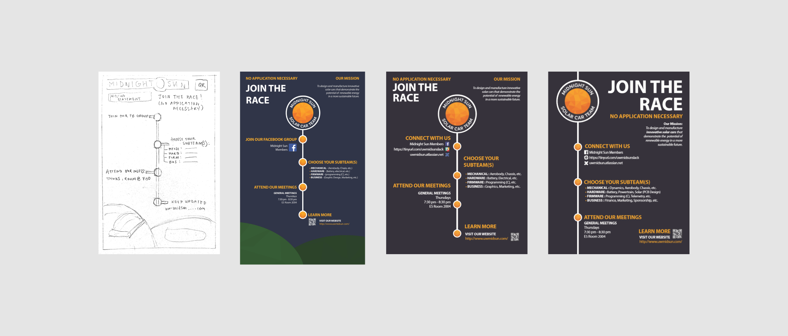

Background
Midnight Sun is the
solar car team at the University of Waterloo. This design team builds a new solar car every two years
to compete at the American Solar Challenge, a solar car race. I often work with Jenn and Kristen (my friends, classmates,
and team members) in the Business and Mechanical subteams. This specific project was done with other Business members.
Process
Jenn, Kristen, and I were tasked to design a poster to be hung up in
the UW Sedra Student Design Centre to attract first-year students.
Keeping our target audience in mind, we first came up with a list of information to include
that would help us reach our goal: to bring first-year students to the design team.
After brainstorming, the list we came up with included:
- What Midnight Sun is, and the different subteams
(firmware, hardware, mechanical, business) that students could join
- Links to Facebook and website
- Time and location for weekly general meetings
After knowing what we needed, we worked individually for 5 - 10 minutes to quickly come up with a variety of
design options. Overall, we wanted a design that would reflect the spirit of Midnight Sun. After coming together
and sharing our ideas, we combined several design ideas in a rough sketch:
We included a QR code to make it easier for people viewing the poster to visit our website.
We also implemented the idea of the solar car race by creating a timeline with different "stops" representing the
blocks of information, and further establishing it with the title, "Join the Race." We wanted to include an illustration of
the current solar car, MSXII, to show at a glance what Midnight Sun is about. We watched Kristen make a higher-fidelity
version of the poster on Adobe Illustrator:
The feedback we received from our PM was that the paper size was incorrect, and that
links should be included to Slack and Confluence, which are heavily used within the team. Because we decreased the size of
the poster, we decided to remove the car illustration from the poster design. We added the links before showing this first iteration
to Queenie, who oversees marketing and graphic design:
The final version of the poster, based on Queenie's feedback:
Because the blocks of information varied in size and alternated from left to right,
the poster looked unbalanced. To make it easier to read, we shifted
the timeline component to the left so that the information could be easily read straight from top to bottom.
We also increased the size of "Join the Race" to make it more attention-grabbing and used white icons to improve the
uniformity of the design.
Next Steps
By designing this recruitment poster, I learned about different elements of graphic design:
- Creating better compositions by balancing the components on the page
- Making the design look cohesive with thoughtful use of color
- Using text hierarchy to draw attention to certain pieces of information
I really appreciated the criticism from the other
members of the team, as all the feedback we received vastly improved the poster design, creating a product that
would more likely achieve its goal to recruit more members to our team.

Looking back on this poster four months later after discussing its design with Robi, there are several things to improve.
A more three-dimensional design would catch a person's eye more easily from a distance, and including a picture of the solar car would
demonstrate more clearly what Midnight Sun is, instead of a viewer reading the smaller text in the mission statement. With these ideas in mind,
a new version is to come soon!